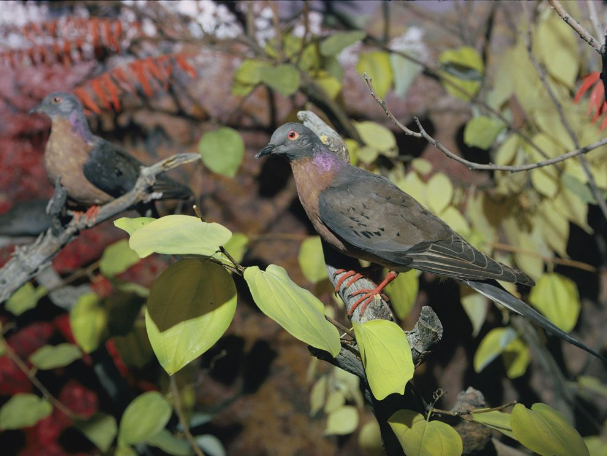

Passenger Pigeon
The passenger pigeon was much larger than the somewhat similarly plumed mourning dove. Adapted for speed and maneuverability in flight, it had a small head and neck; long tail; long, broad and pointed wings; and particularly large breast muscles that enabled it to fly for long distances.
Facts About the Extinct Passenger Pigeon
1. At one time, there were billions of passenger pigeons in North America.
According to Smithsonian, Ectopistes migratorius once made up about 40 percent of North America’s bird population; there may have been 3 to 5 billion passenger pigeons when Europeans first came to America. In 1813, naturalist John James Audubon encountered a flock as he rode to Louisville:
"I dismounted … and began to mark with my pencil, making a dot for every flock that passed. In a short time, finding the task which I had undertaken impracticable as the birds poured in in countless multitudes, I rose, and counting the dots then put down, found that 163 had been made in twenty-one minutes. I traveled on, and still met more the farther I proceeded. The air was literally filled with Pigeons; the light of noon-day was obscured as by an eclipse …"
When he finally reached Louisville—55 miles from where he first saw the birds—they were still flying, and continued to pass for three days.
2. Passenger pigeons could fly very, very fast.
Though awkward on the ground, these birds—which ranged from Ontario, Quebec, and Nova Scotia down to Texas, Louisiana, Alabama, Georgia, and Florida, nested from the Great Lakes to New York, and wintered from Arkansas to North Carolina and further south—were graceful and highly maneuverable in the air, flying at speeds up to 60 mph.
3. And passenger pigeons were shaped for speed.
According to Smithsonian, “The head and neck were small; the tail long and wedge-shaped, and the wings, long and pointed, were powered by large breast muscles that gave the capability for prolonged flight.” On average, males were 16.5 inches, while females were 15.5 inches.
Contact Us!